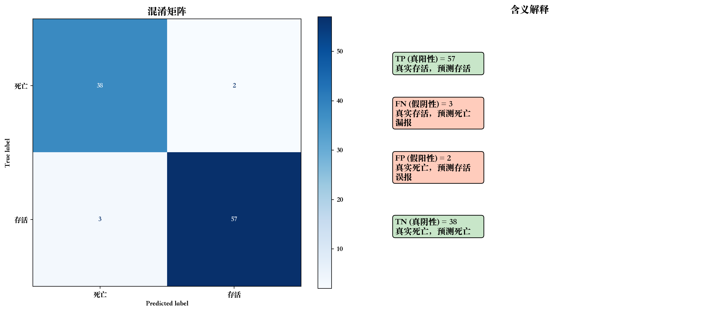
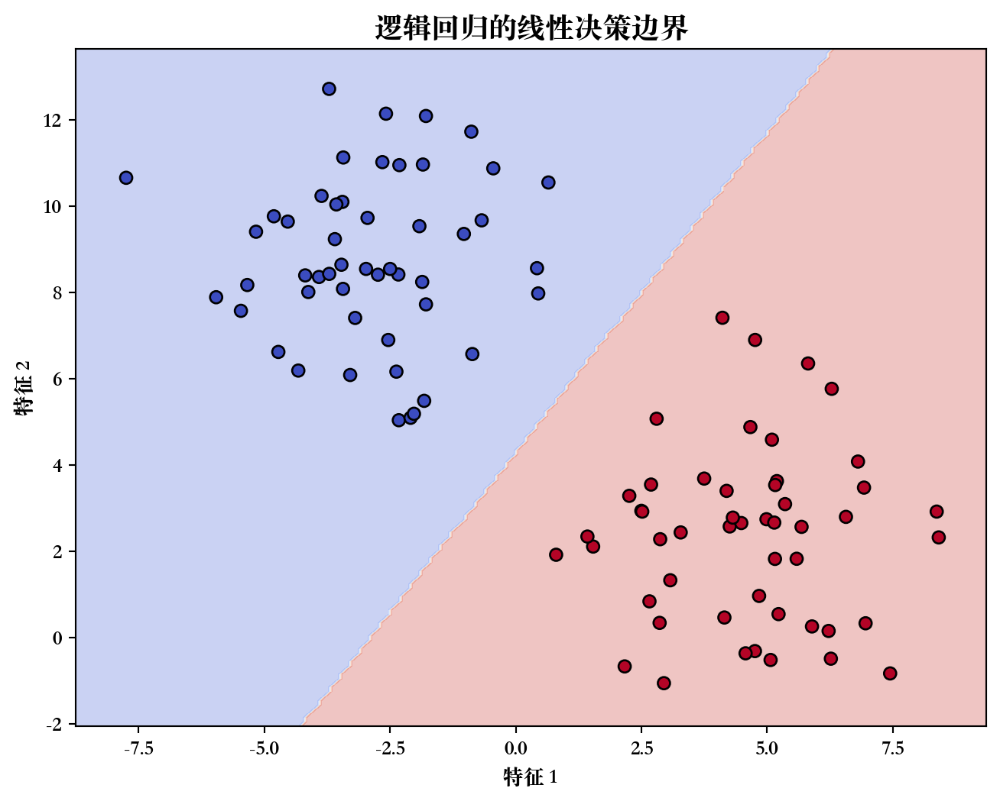
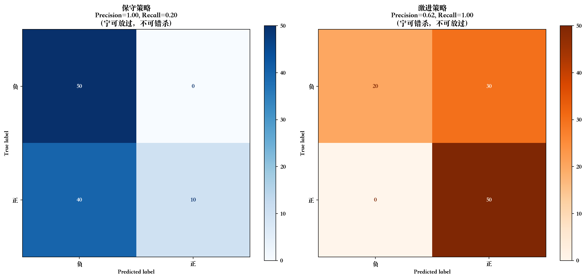

graph LR
A[机器学习任务] --> B[监督学习]
B --> C[回归<br/>Regression]
B --> D[分类<br/>Classification]
C --> C1[预测连续值]
C1 --> C2[例: 250.5万]
D --> D1[预测离散类别]
D1 --> D2[例: 存活/死亡]
style C fill:#c8e6c9
style D fill:#bbdefb
9 第四讲：分类问题、决策树与评估指标
9.1 开场：从预测数值到预测类别
9.1.1 上周回顾
上两周学了什么？
- 数据预处理（缺失值、异常值、归一化）
- 回归模型的评估指标（MAE、RMSE、R²）
- 线性回归模型
- 线性回归模型的正则化（Ridge、Lasso、Elastic Net）
核心任务：回归（预测连续数值）
例子：预测房价 250 万元
9.1.2 本周的新挑战
新任务：分类（预测离散类别）
例子：
- 这笔贷款会违约吗？（是/否）
- 这封邮件是垃圾邮件吗？（是/否）
- 这个肿瘤是良性还是恶性？（良性/恶性）
- 泰坦尼克号上的乘客会存活吗？（存活/死亡）
关键区别：输出不再是数字，而是类别标签
9.1.3 本周学习目标
9.1.3.1 知识目标
- 理解分类与回归的本质区别
- 掌握决策树的基本原理
- 理解混淆矩阵（TP、FP、TN、FN）
- 掌握分类模型评估指标（准确率、精确率、召回率、F1、AUC）
- 理解 ROC 曲线的含义
9.1.3.2 技能目标
- 使用 sklearn 训练决策树分类器
- 计算并可视化混淆矩阵
- 绘制 ROC 曲线并计算 AUC
- 处理类别型特征（编码）
9.2 第一部分：分类 vs 回归
9.2.1 核心区别
9.2.2 对比表格
| 维度 | 回归 (Regression) | 分类 (Classification) |
|---|---|---|
| 输出类型 | 连续数值 | 离散类别 |
| 输出例子 | 250.5 万、3.14、-5.2 | 是/否、猫/狗/鸟 |
| 典型应用 | 房价预测、温度预测、销量预测 | 垃圾邮件识别、疾病诊断、图像识别 |
| 评估指标 | MAE、RMSE、R² | 准确率、精确率、召回率、AUC |
| 可视化 | 拟合曲线、残差图 | 混淆矩阵、ROC 曲线 |
| 常用模型 | 线性回归、回归树 | 逻辑回归、决策树、SVM |
9.2.3 快速判断练习
判断以下问题是分类还是回归？
- 预测明天的最高气温 → 回归（连续值：25.5°C）
- 判断肿瘤是良性还是恶性 → 分类（两个类别）
- 预测用户会花多少钱 → 回归（连续值：$123.45）
- 识别手写数字 0-9 → 分类（10 个类别）
- 预测股票明天的收盘价 → 回归（连续值）
- 预测客户是否会流失 → 分类（是/否）
9.2.4 金融场景中的分类问题
9.2.4.1 信用风险评估
- 问题：这个贷款申请人会违约吗？
- 类别：违约 / 不违约
- 特征：收入、信用评分、负债率、工作年限
9.2.4.2 欺诈检测
- 问题：这笔交易是否欺诈？
- 类别：欺诈 / 正常
- 特征：交易金额、时间、地点、历史行为
9.2.4.3 客户流失预测
- 问题：客户下个月是否会流失？
- 类别：流失 / 留存
- 特征：使用频率、投诉次数、余额、会员等级
9.3 第二部分：决策树（Decision Tree）
9.3.1 引入：人类如何做决策？
场景：银行如何决定是否发放贷款？
传统规则（专家经验）：
IF 收入 > 5000 AND 信用评分 > 700 THEN
批准贷款
ELSE IF 收入 > 8000 THEN
批准贷款
ELSE
拒绝贷款问题：规则由人工制定，可能不准确
决策树：让机器从数据中自动学习这些规则！
9.3.2 决策树的结构
graph TD
A[收入 > 5000?] -->|是| B[信用评分 > 700?]
A -->|否| C[拒绝贷款]
B -->|是| D[批准贷款]
B -->|否| E[拒绝贷款]
style A fill:#fff9c4
style B fill:#fff9c4
style D fill:#c8e6c9,color:#000
style C fill:#ffccbc,color:#000
style E fill:#ffccbc,color:#000
关键概念：
- 根节点：第一个判断条件（收入 > 5000?）
- 内部节点：中间的判断条件（信用评分 > 700?）
- 叶节点：最终决策（批准/拒绝）
- 分裂：根据某个特征的某个值进行分组
9.3.3 决策树如何学习？
9.3.3.1 核心思想
每次选择”最能区分两类”的特征进行分裂
类比：20 个问题猜动物游戏
- 好问题：“是哺乳动物吗？” → 能区分很多动物
- 差问题：“是蓝色的吗？” → 区分能力有限
9.3.3.2 示例数据
| 收入 | 信用分 | 是否违约 |
|---|---|---|
| 3000 | 650 | 是 |
| 6000 | 750 | 否 |
| 4000 | 700 | 是 |
| 7000 | 800 | 否 |
| 5000 | 600 | 是 |
| 8000 | 750 | 否 |
目标：找到最好的分裂点
9.3.3.3 尝试分裂 1：收入 > 5000
graph TD
A[收入 > 5000?] -->|是<br/>3个样本| B[全部不违约 ✓<br/>纯净]
A -->|否<br/>3个样本| C[全部违约 ✓<br/>纯净]
style B fill:#c8e6c9
style C fill:#ffccbc
结果：完美分类！ 纯度 100%
9.3.3.4 尝试分裂 2：信用分 > 700
graph TD
A[信用分 > 700?] -->|是<br/>3个样本| B[2个不违约<br/>1个违约<br/>纯度67%]
A -->|否<br/>3个样本| C[2个违约<br/>1个不违约<br/>纯度67%]
style B fill:#fff9c4
style C fill:#fff9c4
结果：分类不纯净，纯度 67%
选择：收入 > 5000（纯度更高）
9.3.4 决策树的优缺点
9.3.4.1 优点 ✓
- 易于理解：可视化，符合人类思维
- 可解释性强：能清楚看到决策路径
- 不需要归一化：对特征尺度不敏感
- 能处理非线性：不像线性回归只能拟合直线
- 自动特征选择：重要特征会靠近根节点
9.3.4.2 缺点 ✗
- 容易过拟合：树太深会记住训练数据
- 不稳定：数据稍微变化，树结构可能完全不同
- 单棵树精度有限：后续会学集成方法改进
9.3.5 控制过拟合：关键参数
| 参数 | 含义 | 效果 | 建议值 |
|---|---|---|---|
| max_depth | 树的最大深度 | 越大越复杂 | 3-10 |
| min_samples_split | 分裂所需最小样本数 | 越大越保守 | 2-20 |
| min_samples_leaf | 叶节点最小样本数 | 越大越保守 | 1-10 |
| max_leaf_nodes | 最大叶节点数 | 限制树大小 | 10-100 |
核心原则：限制树的复杂度，防止过拟合
9.4 第三部分：混淆矩阵
9.4.1 为什么需要混淆矩阵？
场景：违约预测
- 模型 A：所有人都预测为”不违约” → 准确率 99%（因为 99% 人真的不违约）
- 问题：完全没有检测出违约！
教训：准确率不够！需要更细致的评估
混淆矩阵：把所有预测结果分成 4 类
9.4.2 混淆矩阵的定义
Titanic 例子：预测乘客是否存活
| 预测：存活 | 预测：死亡 | |
|---|---|---|
| 真实：存活 | TP = 50 ✓ 预测对了 |
FN = 10 ✗ 漏报 |
| 真实：死亡 | FP = 5 ✗ 误报 |
TN = 35 ✓ 预测对了 |
9.4.3 四个概念详解
9.4.3.1 TP（True Positive，真阳性）
- 含义：真实是正类，预测也是正类 ✓
- 例子：真的存活，预测存活（50 人）
- 理解：预测对了，皆大欢喜
9.4.3.2 FN（False Negative，假阴性）
- 含义：真实是正类，预测是负类 ✗
- 例子：真的存活，预测死亡（10 人）
- 理解：漏报（本该检测出来，但漏掉了）
9.4.3.3 FP（False Positive，假阳性）
- 含义：真实是负类，预测是正类 ✗
- 例子：真的死亡，预测存活（5 人）
- 理解：误报（本不该报警，但误报了）
9.4.3.4 TN（True Negative，真阴性）
- 含义：真实是负类，预测也是负类 ✓
- 例子：真的死亡，预测死亡（35 人）
- 理解：预测对了，正确排除
9.4.4 记忆方法
graph TD
A[TP/FP/TN/FN] --> B[第一个字母<br/>True/False]
A --> C[第二个字母<br/>Positive/Negative]
B --> D[预测是否正确]
C --> E[预测为哪一类]
D --> F[True = 对<br/>False = 错]
E --> G[Positive = 正类<br/>Negative = 负类]
style F fill:#c8e6c9
style G fill:#bbdefb
口诀：
- True/False：预测对/错
- Positive/Negative：预测为正/负类
- P 在前：Predict Positive（预测为正类）
9.4.5 可视化混淆矩阵
代码
import numpy as np
import pandas as pd
import seaborn as sns
from sklearn.metrics import confusion_matrix, ConfusionMatrixDisplay
# 模拟预测结果
np.random.seed(42)
y_true = np.array([1]*60 + [0]*40) # 60个存活，40个死亡
y_pred = y_true.copy()
# 引入一些错误
y_pred[[5, 8, 12]] = 0 # 3个FN（漏报）
y_pred[[65, 72]] = 1 # 2个FP（误报）
cm = confusion_matrix(y_true, y_pred)
fig, axes = plt.subplots(1, 2, figsize=(14, 6))
# 混淆矩阵（数字）
disp = ConfusionMatrixDisplay(confusion_matrix=cm, display_labels=['死亡', '存活'])
disp.plot(cmap='Blues', ax=axes[0])
axes[0].set_title('混淆矩阵', fontsize=14)
# 标注含义
TN, FP, FN, TP = cm.ravel()
axes[1].text(0.1, 0.8, f'TP (真阳性) = {TP}\n真实存活，预测存活 ✓', fontsize=12,
bbox=dict(boxstyle='round', facecolor='#c8e6c9'))
axes[1].text(0.1, 0.6, f'FN (假阴性) = {FN}\n真实存活，预测死亡 ✗\n漏报', fontsize=12,
bbox=dict(boxstyle='round', facecolor='#ffccbc'))
axes[1].text(0.1, 0.4, f'FP (假阳性) = {FP}\n真实死亡，预测存活 ✗\n误报', fontsize=12,
bbox=dict(boxstyle='round', facecolor='#ffccbc'))
axes[1].text(0.1, 0.2, f'TN (真阴性) = {TN}\n真实死亡，预测死亡 ✓', fontsize=12,
bbox=dict(boxstyle='round', facecolor='#c8e6c9'))
axes[1].set_xlim(0, 1)
axes[1].set_ylim(0, 1)
axes[1].axis('off')
axes[1].set_title('含义解释', fontsize=14)
plt.tight_layout()
plt.show()
print(f"TP={TP}, FN={FN}, FP={FP}, TN={TN}")/var/folders/dh/sd70vd1d0jg1tkw7h3zwjqxr0000gn/T/ipykernel_89141/493726840.py:38: UserWarning:
Glyph 10003 (\N{CHECK MARK}) missing from current font.
/var/folders/dh/sd70vd1d0jg1tkw7h3zwjqxr0000gn/T/ipykernel_89141/493726840.py:38: UserWarning:
Glyph 10007 (\N{BALLOT X}) missing from current font.
/Library/Frameworks/Python.framework/Versions/3.11/lib/python3.11/site-packages/IPython/core/pylabtools.py:170: UserWarning:
Glyph 10003 (\N{CHECK MARK}) missing from current font.
/Library/Frameworks/Python.framework/Versions/3.11/lib/python3.11/site-packages/IPython/core/pylabtools.py:170: UserWarning:
Glyph 10007 (\N{BALLOT X}) missing from current font.

TP=57, FN=3, FP=2, TN=389.5 第四部分：分类评估指标
9.5.1 准确率（Accuracy）
9.5.1.1 定义
\[ \text{Accuracy} = \frac{TP + TN}{\text{总样本数}} = \frac{\text{预测正确的}}{\text{全部}} \]
例子：\(\frac{57 + 38}{100} = 95\%\)
9.5.1.2 准确率的问题
场景：欺诈检测
- 总样本：10000 笔交易
- 欺诈：100 笔（1%）
- 正常：9900 笔（99%）
“愚蠢”模型：
- 策略：预测所有交易都是正常的
- 准确率：\(\frac{9900}{10000} = 99\%\)
- 问题：完全没有抓到欺诈！
结论：在类别不平衡时，准确率会误导
9.5.2 精确率（Precision）
9.5.2.1 定义
\[ \text{Precision} = \frac{TP}{TP + FP} = \frac{\text{真正是正类}}{\text{预测为正类}} \]
业务含义：在所有”预测为正类”的样本中，真正是正类的比例
例子（垃圾邮件）：
- 预测为垃圾邮件的 100 封中，真的垃圾邮件有 90 封
- Precision = 90/100 = 90%
关注点：误报代价高时
- 垃圾邮件过滤：不能误删重要邮件
- 推荐系统：不能推荐用户不喜欢的
9.5.3 召回率（Recall / TPR）
9.5.3.1 定义
\[ \text{Recall} = \frac{TP}{TP + FN} = \frac{\text{找出来的正类}}{\text{真正的正类}} \]
业务含义：在所有”真正是正类”的样本中，被正确找出的比例
例子（疾病诊断）：
- 真实病人 100 人，模型检测出 80 人
- Recall = 80/100 = 80%
关注点：漏报代价高时
- 疾病诊断：不能漏掉病人
- 欺诈检测：不能放过欺诈
- 安检：不能漏掉危险品
9.5.4 Precision vs Recall
代码
# 可视化 Precision vs Recall
fig, axes = plt.subplots(1, 2, figsize=(14, 6))
# 场景1：高 Precision，低 Recall
y_true_1 = np.array([1]*50 + [0]*50)
y_pred_1 = np.array([1]*10 + [0]*40 + [0]*50) # 只预测10个正类，但都对
cm_1 = confusion_matrix(y_true_1, y_pred_1)
TN_1, FP_1, FN_1, TP_1 = cm_1.ravel()
precision_1 = TP_1 / (TP_1 + FP_1) if (TP_1 + FP_1) > 0 else 0
recall_1 = TP_1 / (TP_1 + FN_1)
disp_1 = ConfusionMatrixDisplay(confusion_matrix=cm_1, display_labels=['负', '正'])
disp_1.plot(cmap='Blues', ax=axes[0])
axes[0].set_title(f'保守策略\nPrecision={precision_1:.2f}, Recall={recall_1:.2f}\n（宁可放过，不可错杀）', fontsize=12)
# 场景2：低 Precision，高 Recall
y_pred_2 = np.array([1]*80 + [0]*20) # 预测80个正类，包含30个FP
cm_2 = confusion_matrix(y_true_1, y_pred_2)
TN_2, FP_2, FN_2, TP_2 = cm_2.ravel()
precision_2 = TP_2 / (TP_2 + FP_2)
recall_2 = TP_2 / (TP_2 + FN_2)
disp_2 = ConfusionMatrixDisplay(confusion_matrix=cm_2, display_labels=['负', '正'])
disp_2.plot(cmap='Oranges', ax=axes[1])
axes[1].set_title(f'激进策略\nPrecision={precision_2:.2f}, Recall={recall_2:.2f}\n（宁可错杀，不可放过）', fontsize=12)
plt.tight_layout()
plt.show()
Precision-Recall 权衡：
- 提高 Precision → 降低 Recall（更保守）
- 提高 Recall → 降低 Precision（更激进）
9.5.5 F1 分数
9.5.5.1 定义
\[ F1 = 2 \times \frac{\text{Precision} \times \text{Recall}}{\text{Precision} + \text{Recall}} \]
直观理解：Precision 和 Recall 的调和平均
为什么用调和平均？
- 算术平均：\((0.9 + 0.1) / 2 = 0.5\)
- 调和平均：\(2 \times \frac{0.9 \times 0.1}{0.9 + 0.1} = 0.18\)
调和平均惩罚极端值：两个指标都高，F1 才高
9.5.5.2 F1 的应用场景
何时使用 F1？
- Precision 和 Recall 都重要
- 需要一个综合指标
- 例子：欺诈检测、信息检索
示例计算：
- Precision = 0.9, Recall = 0.8
- F1 = \(2 \times \frac{0.9 \times 0.8}{0.9 + 0.8} = 0.847\)
代码
# F1 分数可视化
precisions = np.linspace(0.1, 1, 50)
recalls = np.linspace(0.1, 1, 50)
P, R = np.meshgrid(precisions, recalls)
F1 = 2 * (P * R) / (P + R)
plt.figure(figsize=(10, 7))
contour = plt.contourf(P, R, F1, levels=20, cmap='RdYlGn')
plt.colorbar(contour, label='F1 分数')
plt.xlabel('Precision', fontsize=12)
plt.ylabel('Recall', fontsize=12)
plt.title('F1 分数热力图\n（两个指标都高，F1 才高）', fontsize=14)
plt.grid(True, alpha=0.3)
plt.show()
9.5.6 指标总结对比
| 指标 | 公式 | 关注点 | 何时使用 | 例子 |
|---|---|---|---|---|
| 准确率 | (TP+TN)/总数 | 整体正确率 | 类别平衡 | 性别识别 |
| 精确率 | TP/(TP+FP) | 误报 | 误报代价高 | 垃圾邮件 |
| 召回率 | TP/(TP+FN) | 漏报 | 漏报代价高 | 疾病诊断 |
| F1 | 调和平均 | 综合 | 两者都重要 | 欺诈检测 |
9.6 第五部分：ROC 曲线与 AUC
9.6.1 分类阈值的影响
问题：分类器输出的是概率，如何转成类别？
例子：
| 样本 | 预测概率 | 阈值=0.5 | 阈值=0.7 | 阈值=0.3 |
|---|---|---|---|---|
| A | 0.8 | 存活 | 存活 | 存活 |
| B | 0.6 | 存活 | 死亡 | 存活 |
| C | 0.4 | 死亡 | 死亡 | 存活 |
| D | 0.2 | 死亡 | 死亡 | 死亡 |
观察：阈值不同，分类结果不同
9.6.2 阈值对指标的影响
代码
# 模拟阈值变化
np.random.seed(42)
y_true_roc = np.array([1]*60 + [0]*40)
y_score = np.concatenate([np.random.beta(8, 2, 60), np.random.beta(2, 5, 40)])
from sklearn.metrics import precision_score, recall_score
thresholds = [0.3, 0.5, 0.7, 0.9]
results = []
for thresh in thresholds:
y_pred_thresh = (y_score >= thresh).astype(int)
precision = precision_score(y_true_roc, y_pred_thresh)
recall = recall_score(y_true_roc, y_pred_thresh)
pred_positive = y_pred_thresh.sum()
results.append({
'阈值': thresh,
'预测正类数': pred_positive,
'Precision': precision,
'Recall': recall
})
df_thresh = pd.DataFrame(results)
print(df_thresh.to_string(index=False)) 阈值 预测正类数 Precision Recall
0.3 74 0.810811 1.000000
0.5 62 0.967742 1.000000
0.7 51 0.980392 0.833333
0.9 10 1.000000 0.166667规律：
- 阈值低 → 预测更多正类 → Recall 高，Precision 低
- 阈值高 → 预测更少正类 → Precision 高,Recall 低
9.6.3 ROC 曲线
9.6.3.1 定义
ROC（Receiver Operating Characteristic）曲线：
- 横轴：假正例率 FPR = FP / (FP + TN)
- 纵轴：真正例率 TPR = TP / (TP + FN) = Recall
- 每个点：一个阈值对应的 (FPR, TPR)
9.6.3.2 ROC 曲线可视化
代码
from sklearn.metrics import roc_curve, auc
fpr, tpr, thresholds_roc = roc_curve(y_true_roc, y_score)
roc_auc = auc(fpr, tpr)
plt.figure(figsize=(10, 8))
plt.plot(fpr, tpr, color='darkorange', lw=3, label=f'ROC 曲线 (AUC = {roc_auc:.3f})')
plt.plot([0, 1], [0, 1], color='navy', lw=2, linestyle='--', label='随机猜测 (AUC = 0.5)')
# 标注几个关键点
for i, thresh in enumerate([0.3, 0.5, 0.7]):
idx = np.argmin(np.abs(thresholds_roc - thresh))
plt.scatter(fpr[idx], tpr[idx], s=100, zorder=5)
plt.annotate(f'阈值={thresh:.1f}', (fpr[idx], tpr[idx]),
textcoords="offset points", xytext=(10,5), fontsize=10)
plt.xlim([0.0, 1.0])
plt.ylim([0.0, 1.05])
plt.xlabel('假正例率 (FPR) = FP/(FP+TN)', fontsize=12)
plt.ylabel('真正例率 (TPR) = Recall', fontsize=12)
plt.title('ROC 曲线', fontsize=14)
plt.legend(loc="lower right", fontsize=12)
plt.grid(alpha=0.3)
plt.show()
9.6.4 理解 ROC 曲线
graph TD
A[左下角 0,0] --> B[随机猜测对角线]
B --> C[左上角 0,1]
A --> D[从不预测正类<br/>TPR=0, FPR=0]
C --> E[完美分类器<br/>TPR=1, FPR=0]
B --> F[随机猜测<br/>TPR=FPR]
style E fill:#4caf50,color:#fff
style D fill:#f44336,color:#fff
style F fill:#ff9800,color:#fff
关键点：
- 左上角 (0, 1)：完美分类器（TPR=1, FPR=0）
- 对角线：随机猜测（瞎蒙）
- 曲线越靠近左上角越好
9.6.5 AUC（Area Under Curve）
9.6.5.1 定义
AUC：ROC 曲线下的面积
取值范围：0.5 ~ 1.0
9.6.5.2 AUC 的含义
直观解释：
随机选一个正样本和一个负样本，模型给正样本打分更高的概率
判断标准：
| AUC 范围 | 模型质量 | 说明 |
|---|---|---|
| < 0.7 | 差 | 接近随机猜测 |
| 0.7 ~ 0.8 | 一般 | 可用但有改进空间 |
| 0.8 ~ 0.9 | 好 | 较好的分类器 |
| 0.9 ~ 1.0 | 很好 | 优秀（小心过拟合） |
9.6.5.3 为什么 AUC 重要？
优点：
- 不受阈值影响：综合评估所有阈值
- 不受类别不平衡影响：比准确率更可靠
- 评估排序能力：而非单点预测
缺点：
- 不够直观（不如准确率好理解）
- 不能直接告诉你用哪个阈值
推荐：
- 类别平衡 → 准确率 + AUC
- 类别不平衡 → 只看 AUC（准确率会误导）
9.7 总结
9.7.1 本讲知识回顾
9.7.1.1 分类 vs 回归
- 回归：预测连续值（房价、温度）
- 分类：预测离散类别（存活/死亡、是/否）
9.7.1.2 决策树
- 结构：根节点、内部节点、叶节点
- 原理：选择最能区分的特征分裂
- 优点：易理解、可解释
- 缺点：易过拟合
9.7.1.3 混淆矩阵与评估指标
| 概念 | 含义 | 何时重要 |
|---|---|---|
| TP | 真阳性：预测对了的正类 | 总是好 |
| FN | 假阴性：漏报 | 疾病诊断 |
| FP | 假阳性：误报 | 垃圾邮件 |
| TN | 真阴性：预测对了的负类 | 总是好 |
| Precision | 预测为正类中真正是正类的比例 | 误报代价高 |
| Recall | 真正是正类中被找出的比例 | 漏报代价高 |
| F1 | Precision 和 Recall 的调和平均 | 综合评估 |
9.7.1.4 ROC 与 AUC
- ROC 曲线：不同阈值下的 TPR vs FPR
- AUC：ROC 曲线下面积（0.5~1.0）
- 优点：不受阈值和类别不平衡影响
- 推荐：类别不平衡时必看 AUC
9.7.2 核心要点
选对评估指标
类别平衡 → 准确率；类别不平衡 → AUC理解业务需求
误报代价高 → Precision；漏报代价高 → Recall可视化很重要
混淆矩阵 + ROC 曲线 比单看数字更直观决策树易过拟合
控制 max_depth，下周学更强的模型
9.8 Q&A
Q1：请用一句话概括“分类”与“回归”的本质区别，并判断“预测客户信用评级（A/B/C/D）”属于哪一类？
A：
- 本质区别：回归（Regression）预测的是连续数值（例如房价250.5万），而分类（Classification）预测的是离散类别（例如“存活”/“死亡”）。
- 判断：“预测客户信用评级”属于分类问题，因为它是在预测有限的几个类别（A、B、C、D）。
Q2：什么是混淆矩阵？请写出 TP、FP、FN、TN 的中文含义。
A： 混淆矩阵是用来详细评估分类模型性能的工具，它将预测结果分为四种情况：
- TP (True Positive):真阳性（真实为正类，预测也为正类）
- FN (False Negative):假阴性（真实为正类，预测为负类，即“漏报”）
- FP (False Positive):假阳性（真实为负类，预测为正类，即“误报”）
- TN (True Negative):真阴性（真实为负类，预测也为负类）
Q3：为什么“准确率” (Accuracy) 在类别不平衡（例如 99% 正常交易，1% 欺诈交易）的数据集上是一个具有误导性的指标？
A： 因为在这种情况下，一个“愚蠢”的模型如果把所有样本都预测为占比高的那个类别（例如“正常交易”），它依然可以获得极高的准确率（例如 99%）。但这个模型是完全无用的，因为它一个欺诈样本都检测不出来。
Q4：什么是 AUC？ROC 曲线下面积（AUC）为 0.5 意味着什么？
A： * AUC：指的是 ROC 曲线（受试者工作特征曲线）下方的面积（Area Under Curve）。 * AUC = 0.5：这意味着模型的表现和随机猜测（瞎蒙）一样。ROC 曲线表现为一条从(0,0)到(1,1)的对角线。
Q5：在什么业务场景下，我们应该优先关注“精确率” (Precision)？在什么场景下又该优先关注“召回率” (Recall)？请各举一例。
A： 这取决于我们更害怕哪种错误（“误报”还是“漏报”）： 1. 优先 Precision (精确率)：当“误报” (FP) 的代价很高时。 * 例子：垃圾邮件过滤。我们更害怕把一封重要邮件（例如 offer 或账单）错判为垃圾邮件（FP），相比之下，漏掉几封垃圾邮件（FN）的代价较低。 2. 优先 Recall (召回率)：当“漏报” (FN) 的代价很高时。 * 例子：疾病诊断 或金融欺诈检测。我们更害怕把一个真正的病人漏诊为“健康”（FN），因为这可能危及生命。相比之下，把健康人误判为“疑似病人”（FP）让他再做一次检查，代价相对较低。
Q6：如果你的决策树模型表现出明显的“过拟合”（即训练集表现很好，测试集表现很差），你应该调整讲义中提到的哪些参数来限制模型的复杂度？
A： 为了防止过拟合，我们应该限制树的复杂度。讲义中提到了几个关键参数：
max_depth(最大深度)：减小这个值，让树变得更浅，防止它学得太细。min_samples_split(分裂所需最小样本数)：增大这个值，要求一个节点必须有足够多的样本才能继续分裂。min_samples_leaf(叶节点最小样本数)：增大这个值，确保每个叶节点（最终决策）都代表了足够多的样本。
Q7：为什么 F1 分数要使用 Precision 和 Recall 的“调和平均数”，而不是简单的“算术平均数”（即 (P+R)/2）？
A： 因为调和平均数会更严厉地惩罚极端情况。
- 例子：假设 Precision = 0.9，Recall = 0.1。
- 算术平均 = (0.9 + 0.1) / 2 = 0.5（看起来还不错）
- 调和平均 (F1) = \(2 \times \frac{0.9 \times 0.1}{0.9 + 0.1} = 0.18\)（非常低）
- 结论：F1 分数的目标是确保 Precision 和 Recall 两者都必须比较高时，F1 分数才会高。如果其中任何一个指标很低，F1 分数都会被拉得很低，这更符合我们对一个“好模型”的综合评估要求。
Q8：分类器输出的“概率阈值”（Threshold）是如何影响 Precision 和 Recall 的？如果我们把阈值从 0.5 提高到 0.8，Precision 和 Recall 会如何变化？
A：
- 影响：阈值决定了模型预测的“激进”程度。
- 提高阈值 (0.5 \(\rightarrow\) 0.8)：这意味着模型变得“保守”了，只有当它非常有把握（概率 > 0.8）时，才会把样本预测为正类。
- Precision (精确率) 会上升：因为被预测为“正类”的门槛高了，这些预测中“猜对”的比例（TP / (TP+FP)）会更高。
- Recall (召回率) 会下降：因为模型变得保守，它会漏掉很多“不太确定但确实是正类”的样本（FN 增加），导致“找全”的能力（TP / (TP+FN)）下降。
- 这就是 Precision-Recall 权衡。